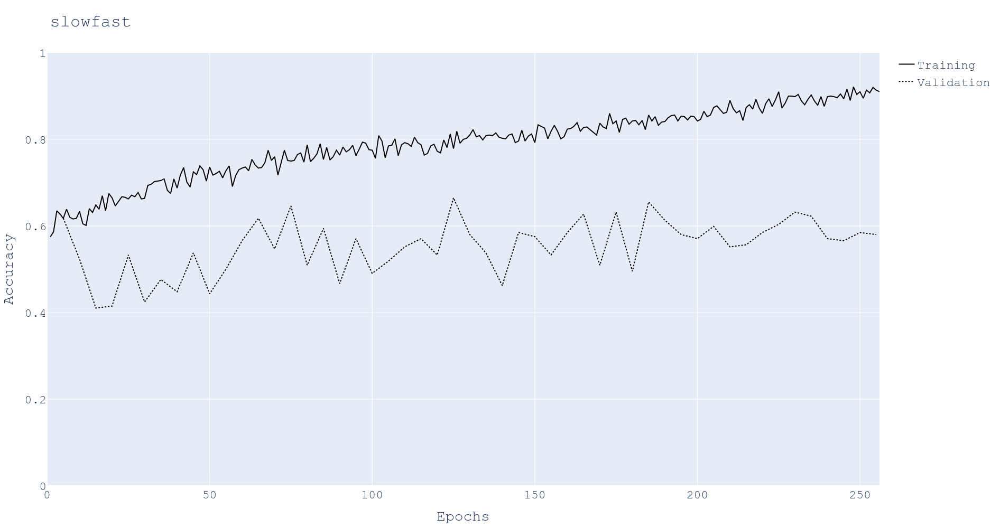
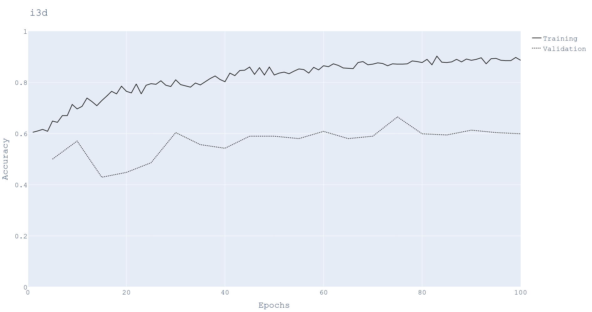
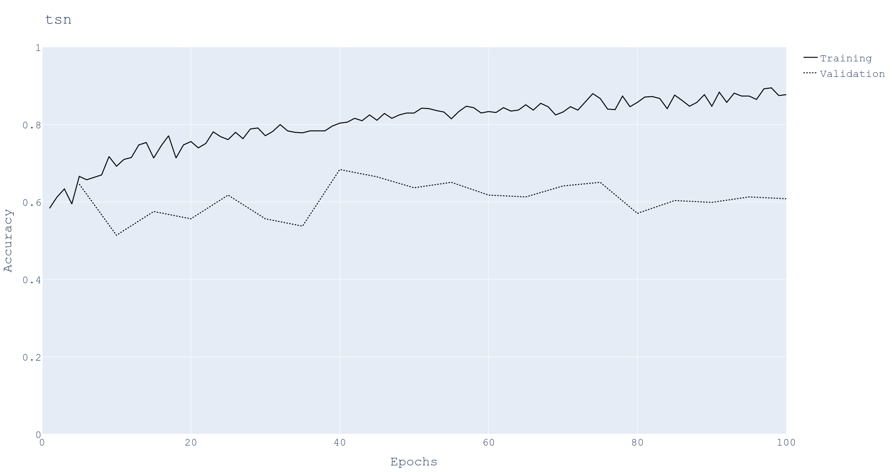
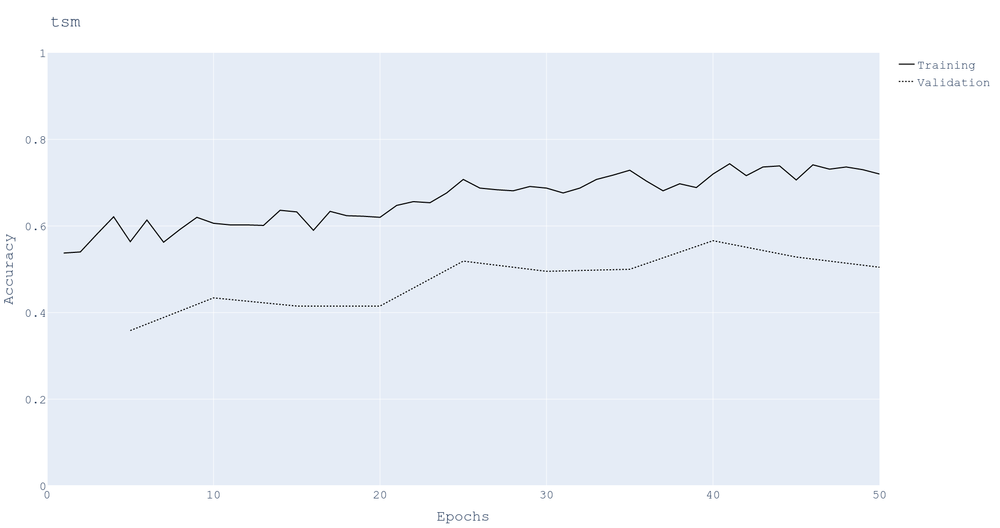

Table of Contents
1. Feedback
- Plot SOTA learning curves.
- Make the validation learning curves (loss and accuracy) smoother.
- Try the smoothing with default values used by tensorflow.
- Decrease the initial learning rate for adam optimizer.
- Create a datasplit to have more sessions in Testing and Validation. The recommendation is 50 for training, 30 for validation and 20 for testing.
2. Action items
2.1. DONE Plot SOTA learning curves
2.2. TODO Smooth learning curves with the default tensorflow window based smoothing algorithm.
2.3. TODO Decrease initial learning rate of 10FPS model.
2.4. TODO Create a datasplit to distribute more sessions for validation and Testing.
3. SOTA learning curves
- The learning curves are for writing/nowriting recognition.
The dataset is as below
# Samples (writing, nowriting) # Sessions Training (309, 579) 28 Validation (124, 88) 2
3.1. Using mmaction2 library.
- The plotting tool from the
mmaction2library does not seem to support plotting of validation accuracy and loss.-
# from tools/analysis/analyze_logs.py line 59 for epoch in epochs: iters = log_dict[epoch]['iter'] if log_dict[epoch]['mode'][-1] == 'val': iters = iters[:-1] xs.append(np.array(iters) + (epoch - 1) * num_iters_per_epoch) ys.append(np.array(log_dict[epoch][metric][:len(iters)]))
-
- Hence I wrote my own code to support plotting of Training and Validation accuracy.
- Also, by editing
workflowparameter,mmaction2library claims to support calcuation of validation loss.-
[('train', 1), ('val', 1)] - From my understanding I need to rerun the training to get validation loss. May be there is a way to calculate it from saved checkpoints as described at evaluating a metric.
-
3.2. Using my library
3.2.1. Producing the maps using plotly
# From HAQ/sota/2022-mmaction2/plotting/
plot_learning_curves.py \
/mnt/twelvetb/vj/mmaction2_2022/workdir/wnw_table_roi/resized_224/slowfast/run1_Sep09_2022/20220909_194741.log.json
3.2.2. Slowfast accuracy per epoch
- Link: Click here to view the plot 
3.2.3. I3D accuracy per epoch
- Link: Click here to view the plot 
3.2.4. TSN accuracy per epoch
- Link: Click here to view the plot 
3.2.5. TSM accuracy per epoch
- Link: Click here to view the plot 
4. Keras based image classifier (transfer learning)
4.1. Installation in P7920
4.1.1. Tensorflow2 using conda (Not working with GPU)
conda create --name tf-gpu tensorflow-gpu
4.1.2. Testing the installation (NOT WORKING WITH GPU)
After installing I ran the following code to test proper loading of GPU libraries, Simple MNIST convnet. The libraries loaded correctly and there are no errors.
4.1.3.
4.2. Transfer learning
- Documentation links
- Keras Transfer learning & fine-tuning tutorial: Keras tutorail about transfer learning and fine tuning.
- Keras Applications: Deep learning models made available by keras library along with pretrained weights.
- Image dataset from directory: How to load our own dataset from directory.
- Rock, paper, and scissor recognition using VGG-19: A good tutorial using tensorflow transfer learning and dataset having hand signs.